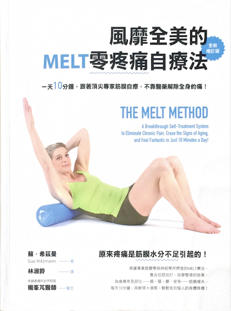

Melt Method 與 Pose Method 的共通點

前陣子剛收到 Melt Method 的二版書，但一直沒有時間重讀，最近重讀之後才更加認識到這本書的寶貴，而且 Melt Method 這套體系也很強調「知覺」的重要性，因為當時還不懂得「知覺」是什麼，所以對書中的這個部分很無感，但現在讀來竟跟 Pose Method 所強調的技術訓練與知覺開發產生強烈的連結，所以打算花時間好好來研究與實作書內的內容。
這本書在 2012 年的時候是由我負責審書推薦給出版社，重新檢視當時的審書報告，最後一段寫道：「我個人非常喜歡這本書，甚至會一再重讀。因為裡頭有許多新的觀念與知識，而且作者本人的知識背景、思考邏輯、實作與治療經驗太豐富，所以值得信賴。」
審書報告的最後一個問題是：你會如何評斷？當時選的是「非讀不可」，而且立即請美國的朋友把 MELT 的按摩工具和教學 DVD 買回來研究。
很幸運的，這本書最後在二〇一三年於台灣順利出版，看來這幾年來也獲得讀者的支持，今年五月再版。本書的作者蘇．希茲曼(Sue Hitzmann)原本身兼有氧舞蹈的老師與健身教練，曾上過《肌肉健身雜誌》的封面人物，經常在美國健身界大會擔任主持人，在當時可是美國健身界的知名教練，但後來有天早上起床後腳跟疼痛，接著擴及到上唇麻痺，長期都解決不了，最後在顱薦骨治療師的幫助下，一次就解決了，使她忽然對治療這個領域產生了濃厚的興趣，十多年後創立了 MELT，代表的是「肌筋膜能量長度技術」(Myofascial Energetic Length Technique)的縮寫。
希茲曼在自序中的一段話也深深打動我：「我沒有研究領域背景，也沒有博士或醫師執照資格，而熱愛人體科學和它的運作模式一直影響著我，讓我花了超過二十年的時間學習任何與人類身體相關的一切。……我獨立研究神經學和筋膜學，加上研究圈的熱情擁護，證實並啟發我的徒手治療工作與 MELT 療法的開發。」(台北：臉譜，二版，22 頁)
重讀之後，有很多的啟發。印象最深刻的部分是希茲曼對「重新連結」這個概念的重視，下面引用書中 95~96 頁：
--
每一個連續動作前後做「重新連結」的重要性，我是在工作室和琳恩做完第一次檢測後的幾年才發現的。有一位和我學 MELT 療法技術的學生來告訴我：「我發覺做 MELT 療法一陣子後，它就無法完全發揮作用，或者持久了。」我問他：「你說的無法發揮作用是指什麼？你檢測時，沒感覺到改變嗎？」他回答我：「這個嘛……我已經知道它的好處是什麼了，所以也沒再確實做檢測了。」
我也沒真的預先想過自己接下來該說什麼就回他說：「嗯……如果你不做檢測，怎麼會知道它是否發揮作用，然後評估當中的改變呢？重點不在於你知道或感覺到改變，而是你的自律神經系統能意識到改變。你想要連結無念的本我（non-thinking self），傳達想幫助自己的企圖。可是如果你不停下來，讓『自動導航器』去偵測身體的失衡，身體要如何徹底明白你正在為它做的一切呢？」
我發現自己先前從來沒有將「檢測」的重要性講得這麼清晰明白。這番話實在太有道理了。如果每一個連續動作的前後階段不做「重新連結」，你會失去一半以上的 MELT 療法成效，因為「自動導航器」無法偵測到你處在失衡與錯位的狀態，所以它無法有重新校準的機會。我在這時候也領悟到檢測真的是 MELT 自我療法中的強力關鍵。每一個 MELT 連續動作的前、中、後的檢測，是為身體創造最持久改變的必然要件。重新檢測給「自動導航器」有機會重新接收到自己的全球衛星定位系統訊號。這也是我之所以在 MELT 療法中，將「重新連結」擺在 4R 的第一位。
--
4R 是 MELT Method 的四個核心概念：
- 重新連結（Reconnect）
- 重新平衡（Rebalance）
- 再水合（Rehydrate）
- 釋放（Release）
目的都只有一個：解決身體裡「卡住的壓力」。其中，「重新連結」這個概念最重要，它其實就是治療最後的「自我檢測過程」，希茲曼在書中非常強調它的重要性，過去看不懂，但現在知道它好比 Pose Method 的技術訓練動作之後都要「慢跑」一樣。它正是在把「改變」連結到無念的本我(潛意識)，傳達想幫助自己想跑得更好的企圖，使「自動導航器」逐步接受新的跑姿。所以羅曼諾夫博士強調每一個跑步技術練完一定要慢跑，才能讓關鍵跑姿的知覺內化到跑步動作中。這就跟希茲曼強調每一個療程結束都要檢測一樣。
非常有意思！